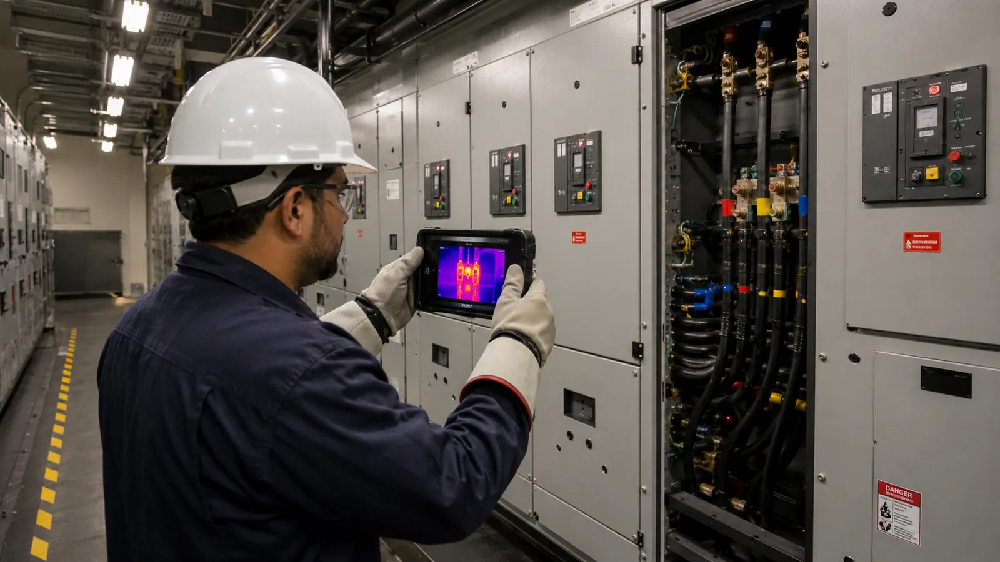
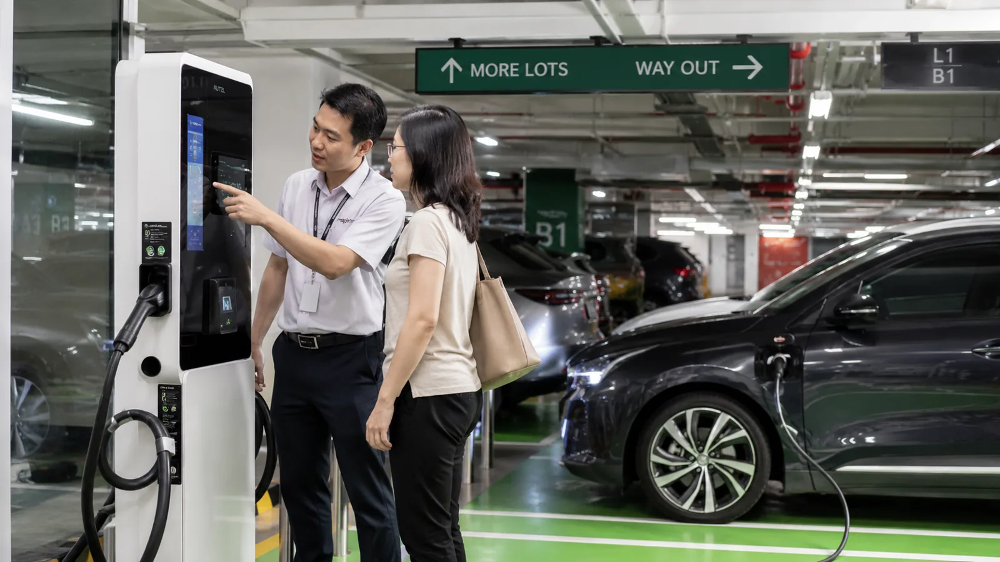

그린 리모델링을 에너지 공사로만 팔지 않습니다
“운영비가 얼마나 줄고, 임차인 만족과 공실, 자산가치에 어떤 영향을 주며, 어떤 공사를 먼저 해야 하는가”를 진단과 공간 밸류업 관점에서 같이 제안합니다.
국토교통부 제3차 녹색건축물 기본계획(2025~2029)은 노후 공공건축물 그린리모델링의 단계적 의무화와 기존 건축물 에너지 성능 개선을 주요 방향으로 두고 있습니다. 민간 건물도 같은 방향으로 움직이고 있고, 지유는 에너지 전문기관과 파트너십으로 “임대·운영수익 개선 + 에너지·유지비 절감”을 동시에 제안합니다.
| 진단 영역 | 대상 | 지유의 역할 |
|---|---|---|
| 외피 | 창호, 단열, 방수, 옥상, 외벽 | 상태 진단, 개선 우선순위, 공사 PM |
| 기계 · 공조 | 냉난방, 공조, 펌프, 배관 | 진단, 교체 주기, 효율 개선안 |
| 전기 · 조명 | LED, 수변전, 계량, 제어 | 점검, 예산, 파트너 선정 |
| 에너지 | 전기·가스·수도 사용량, 시간대 패턴 | 전문 진단기관 연계, 절감 목표 관리 |
| 임대 · 공간 | 열환경, 쾌적성, 공실층 리뉴얼 | 공간기획과 임대경쟁력 개선 |
| 운영 | 예방정비, 사용 시간, 장비 설정 | 시설관리 운영 개선과 성과 모니터링 |
진행 순서
공사 먼저가 아니라, 현재 상태와 사용량을 먼저 봅니다. 그다음 공사비 대비 효과가 큰 순서로 정하고, 끝난 뒤에는 실제로 줄었는지 확인합니다.
- 1
그린 진단
설비·외피 상태와 에너지 사용량, 시간대 패턴을 확인합니다.
- 2
회수 계획
공사 항목별 비용과 절감 효과, 회수기간으로 우선순위를 정합니다.
- 3
파트너 선정
에너지진단·설비·창호·방수 분야별 전문업체를 비교해 고릅니다.
- 4
PM
공정·품질·비용을 건물주 편에서 관리합니다.
- 5
검증
공사 후 사용량과 쾌적성, 임차인 반응을 측정합니다.
- 6
시설관리
예방정비와 장비 설정으로 절감 효과를 유지합니다.
공실층 리뉴얼과 에너지 개선을 한 번에
비어 있는 층을 리뉴얼할 때 창호·조명·공조 개선을 같이 하면, 공사비를 한 번 쓰고 임대경쟁력과 운영비를 동시에 개선할 수 있습니다. 지유코퍼레이션의 실사에서 노후·에너지·설비 교체 이슈가 큰 건물부터 이 패키지를 제안합니다.
- 지원제도·융자·인증은 프로젝트마다 최신 요건을 확인해 활용하되, 지원금 자체를 제안의 핵심 가치로 삼지 않습니다.
- 에너지진단·설비·창호·방수 등 전문업체를 분야별로 두고, 지유는 통합 PM과 성과관리 역할을 맡습니다.
- 공사 후에는 시설관리로 이어서 예방정비와 장비 설정을 관리해 절감 효과가 유지되도록 합니다.


주차장과 부속 설비도 개선 대상입니다
전기차 충전 구역 설치, LED 교체, 무인 주차 시스템 도입은 운영비를 줄이면서 건물의 상품성을 높이는 대표적인 항목입니다. 시설관리와 묶어 설치부터 운영까지 맡습니다.
시설관리 FM 보기